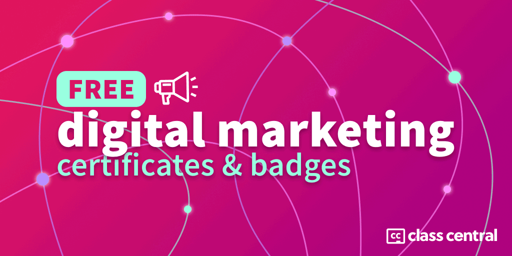

[2023] हजारों मुफ्त प्रमाणपत्रों और बैज की विशाल सूची
दुनिया भर के विश्वविद्यालयों, कंपनियों और गैर-लाभकारी संस्थाओं के मुफ़्त प्रमाणपत्र और बैज के साथ हज़ारों कोर्स।

In this article, the क्लास सेंट्रल team has come together to compile the single largest collection on free certificate courses available online.
Certificates can उत्साह करना learners to पूरा online courses. When the modern online course movement began, platforms like Coursera and edX offered free certificates. But by 2015, these had largely been सशुल्क लोगों द्वारा प्रतिस्थापित .
Fortunately, universities like हार्वर्ड and स्टैनफोर्ड still offer some free certificates. And so do platform like Coursera and एडएक्स . Finally, companies like गूगल and माइक्रोसॉफ्ट have also started offering free certificates to promote their products.
नि: शुल्क प्रमाणपत्रों को ढूंढना कठिन हो सकता है।
यदि आप अधिक निःशुल्क प्रमाणपत्र पाठ्यक्रम जानते हैं, तो कृपया उन्हें टिप्पणियों में साझा करें।

एसईओ
- एसईओ बुनियादी बातों
- सेमरश एसईओ क्रैश कोर्स
- सामग्री-एलईडी एसईओ
- एसईओ के लिए GA4
- एसएमबी वेबसाइटों के लिए एसईओ
विषयवस्तु का व्यापार
-
Content Marketing
Fundamentals - उन्नत सामग्री विपणन
-
Content and SEO Tactics for
Agencies - मास्टरिंग डिजिटल पीआर
विपणन रणनीति
-
Marketing Analysis
Fundamentals - एक लाभदायक एसएमबी लॉन्च करना
-
Building a Social Listening
Program
Learn proven tactics and strategies from top marketing experts.
नि: शुल्क पंजीयन कराएं
.
विषयसूची
यह लेख लंबा है।
| गूगल | 600+ free certificates and badges on technical topics such as Android Development, Google Analytics, and Google Cloud. |
| लिंक्डइन लर्निंग | 800+ hours of online courses with free certificates on topics such as business, design, and technology. |
| माइक्रोसॉफ्ट | 3500+ modules and 750+ learning paths with free badge on technical topics such as business apps, data, and AI. |
| हार्वर्ड | 8 free certificate courses on academic topics such as computer science, programming, and AI. |
| स्टैनफोर्ड | 300+ medical courses with free certificates and CME credit. |
| खुला विश्वविद्यालय | 800+ free certificate courses on varied academic topics such as business, law, and science. |
| डिजिटल विपणन | 1000+ free certificates and badges on digital marketing topics such as SEO, social media marketing, and advertising. |
| फ्यूचरलर्न | 100+ free certificate courses primarily made by universities on a wide variety of topics. |
लेकिन और भी है!
- आईबीएम
- बिक्री बल
- freeCodeCamp
- Coursera
- मतलब
- कागल
- डेटाकैंप
- तस्मानिया विश्वविद्यालय
- हैकररैंक
- हेलसिंकी और रिएक्टर विश्वविद्यालय
- रेडिस
- openHPI
- ओपनसैप
- कैनवास नेटवर्क
- सीमांत क्रांति विश्वविद्यालय
- ट्विटर
- महान सीख
- अपग्रेड
- हबस्पॉट
- सेमरश
- मोंगोडीबी
- वाई कॉम्बिनेटर
- गिटलैब
- सायलर अकादमी
- जोवियन.ई
- चीनी विश्वविद्यालय एमओओसी
- एड्राक
- गाको
- स्टेपिक
- ओपनडब्ल्यूएचओ
- एफएओ
- यूएन सीसी: ई-लर्न
- परोपकार विश्वविद्यालय
- मानवाधिकारों का वैश्विक परिसर
- + कुशाग्र बुद्धि
- अंतर्राष्ट्रीय प्रशिक्षण केंद्र
- सिस्को नेटवर्किंग अकादमी
- अर्बिनो विश्वविद्यालय
अधिक ऑनलाइन पाठ्यक्रम
If you don’t find what you need in the course list below, browse क्लास सेंट्रल ‘s extensive catalog of 100,000 ऑनलाइन पाठ्यक्रम or check out our curated collections:
- क्लास सेंट्रल के अब तक के सर्वश्रेष्ठ ऑनलाइन पाठ्यक्रम
- 1600+ कौरसेरा पाठ्यक्रम जो अभी भी पूरी तरह नि:शुल्क हैं
- अब तक के 250 टॉप फ्री उडेमी कोर्स
- सभी समय के 100 शीर्ष नि:शुल्क एडएक्स पाठ्यक्रम
- 100+ फ्यूचरलर्न कोर्स जो अभी भी मुफ्त प्रमाणपत्र प्रदान करते हैं
To see all our compilations, visit क्लास सेंट्रल के संग्रह .
Google की ओर से मुफ़्त प्रमाणपत्र

जीमेल से मैप्स तक, Google ढेर सारे उपयोगी ऐप्स प्रदान करता है।
इसलिए हमने उनके सभी निःशुल्क प्रमाणपत्र पाठ्यक्रमों को संकलित करने के लिए Google के संपूर्ण ऑनलाइन शिक्षण पारिस्थितिकी तंत्र की छानबीन करने का निर्णय लिया।
In total, we found over 700 courses, covering topics such as digital marketing, Google Analytics, and Google Cloud. You can find the full list in our dedicated article: 700+ निःशुल्क Google प्रमाणन .
यहां Google द्वारा ऑफ़र किए जाने वाले प्रमाणपत्र पाठ्यक्रमों के कुछ उदाहरण दिए गए हैं, जिनकी शुरुआत Google Analytics 4 के पाठ्यक्रमों से होती है:
- Google विश्लेषिकी प्रमाणन from गूगल via कौशल की दुकान ★★★★☆(1)
- अपने व्यावसायिक उद्देश्यों को पूरा करने के लिए Google Analytics का उपयोग करें from गूगल via कौशल की दुकान ★★★★☆(3)
- Google Analytics की अगली पीढ़ी की खोज करें from गूगल via कौशल की दुकान ★★★★☆(1)
- Google Analytics के साथ अपनी मार्केटिंग को मापें from गूगल via कौशल की दुकान
- अपने Google Analytics डेटा के साथ आगे बढ़ें
- शुरुआती के लिए Google विश्लेषिकी from गूगल via स्वतंत्र ★★★★★(43)
- उन्नत Google विश्लेषिकी from गूगल via स्वतंत्र ★★★★★(6)
- शक्तिशाली उपयोगकर्ताओं के लिए Google विश्लेषिकी from गूगल via स्वतंत्र ★★★★★(1)
- Google Analytics 360 के साथ आरंभ करना
- Google टैग प्रबंधक मूल बातें
- डेटा स्टूडियो का परिचय
हार्वर्ड मुक्त प्रमाण पत्र

Class Central’s @manoel wrote a व्यापक गाइड explaining how to earn a free certificate in CS50, हार्वर्ड का कंप्यूटर साइंस का परिचय , and in the other courses in the CS50 lineup, which includes the courses below.
To get the certificate for free, you’ll want to take the courses through Harvard OCW. For more details, head to क्लास सेंट्रल का CS50 इन-डेप्थ गाइड . We also have course-specific guides: हार्वर्ड CS50 प्रमाणपत्र and हार्वर्ड CS50 पायथन प्रमाणपत्र .
- कंप्यूटर विज्ञान के लिए CS50 का परिचय from विदेश महाविद्यालय ★★★★★(109)
- CS50 की पायथन और जावास्क्रिप्ट के साथ वेब प्रोग्रामिंग from विदेश महाविद्यालय ★★★★★(11)
- व्यावसायिक पेशेवरों के लिए CS50 का कंप्यूटर विज्ञान from विदेश महाविद्यालय ★★★★★(4)
- CS50 की अंडरस्टैंडिंग टेक्नोलॉजी from विदेश महाविद्यालय ★★★★★(6)
- CS50 का पायथन के साथ आर्टिफिशियल इंटेलिजेंस का परिचय from विदेश महाविद्यालय ★★★★★(2)
- वकीलों के लिए CS50 का कंप्यूटर साइंस from विदेश महाविद्यालय ★★★★★(1)
- CS50 का पायथन के साथ प्रोग्रामिंग का परिचय from विदेश महाविद्यालय
- खेल विकास के लिए CS50 का परिचय from विदेश महाविद्यालय
- स्क्रैच के साथ प्रोग्रामिंग के लिए CS50 का परिचय from विदेश महाविद्यालय
The मूल पाठ्यक्रम is one of the world’s most popular MOOCs with over 3.7 million enrollments on edX. It is also one of the अब तक के सर्वश्रेष्ठ मुफ्त ऑनलाइन पाठ्यक्रम on Class Central.
स्टैनफोर्ड मेडिसिन फ्री सर्टिफिकेट और सीएमई क्रेडिट

स्टैनफोर्ड मेडिसिन offers a flurry of online learning resources in the medical field, from podcasts to full-fledged courses, that include free certificates of completion.
Learners also have access to a formal transcript from Stanford, listing all the training they’ve completed. And if you work in healthcare, you can earn सतत चिकित्सा शिक्षा क्रेडिट (CME credit) via the platform.
यहां स्टैनफोर्ड के कुछ निःशुल्क प्रमाणपत्र प्रस्ताव दिए गए हैं:
- ऑनलाइन पाठ्यक्रम : भोजन और स्वास्थ्य का परिचय , चिकित्सा में अचेतन पूर्वाग्रह , or जेंडर स्पेक्ट्रम के पार स्वास्थ्य , to name a few.
- वेबिनार : The बाल चिकित्सा ग्रैंड राउंड , a series of hour-long on-demand webinars, where experts discuss various topics related to children’s healthcare. Here’s a webinar that focuses on बाल चिकित्सा देखभाल में समानता .
- पॉडकास्ट : The स्टैनफोर्ड मेडकास्ट , a biweekly 30-minute medical podcast. Each episode focuses on a new topic, often related to recent medical developments. The most recent episode discusses मल्टीपल स्केलेरोसिस में स्टेम सेल थेरेपी .
For more details on how to earn a free certificate from Stanford, head to our article: स्टैनफोर्ड मेडिसिन निःशुल्क प्रमाणपत्र और सीएमई क्रेडिट के साथ पाठ्यक्रम प्रदान करता है .
लिंक्डइन लर्निंग से निःशुल्क प्रमाणपत्र

Class Central’s @suparn searched LinkedIn Learning’s catalog of 9,000+ courses and 425 learning paths (which consist of a set of bundled courses) and identified the ones which are available for free and offer a free certificate.
Here is what he found: 160 कोर्स और 22 लर्निंग पाथ मुफ्त सर्टिफिकेट प्रदान करते हैं , which represents 750+ hours of free online learning resources. You can find the list of learning paths below. And here’s the complete list of लिंक्डइन लर्निंग फ्री सर्टिफिकेट कोर्स .
- डिजिटल मार्केटिंग विशेषज्ञ बनें
- प्रोजेक्ट मैनेजर बनें
- डेटा विश्लेषक बनें
- एक ग्राफिक डिजाइनर बनें
- एक सॉफ्टवेयर डेवलपर बनें
- चुनौतीपूर्ण आर्थिक समय के दौरान नौकरी ढूँढना
- मास्टर इन-डिमांड प्रोफेशनल सॉफ्ट स्किल्स
- एक वित्तीय विश्लेषक बनें
- ग्राहक सेवा में अपना कौशल विकसित करें
- बिक्री प्रतिनिधि बनें
- CompTIA A+ प्रमाणन के लिए तैयारी करें (220-1001 और 220-1002)
- CompTIA नेटवर्क+ (N10-007) प्रमाणन के लिए तैयार रहें
- व्यवहार में डिजिटल परिवर्तन: आभासी सहयोग उपकरण
- अपने एक्सेल कौशल का निर्माण करें
- अपने गंभीर सोच कौशल का निर्माण करें
- सांख्यिकीय विश्लेषण के साथ अपने विश्लेषणात्मक कौशल का निर्माण करें
- अपने डेटा विश्लेषण कौशल का निर्माण करें
- अपने ध्यान-से-विस्तार कौशल का निर्माण करें
- अपनी झांकी कौशल का निर्माण करें
- भर्ती में अपने कौशल का निर्माण करें
- बिक्री विकास में अपने कौशल का निर्माण करें
- ग्राहक बिलिंग सहायता में अपना कौशल विकसित करें
एक बार जब आप वीडियो, क्विज़ या परीक्षा पूरी कर लेते हैं तो लिंक्डइन लर्निंग सर्टिफिकेट उपलब्ध हो जाता है।
माइक्रोसॉफ्ट लर्न की ओर से निःशुल्क प्रमाणपत्र

Microsoft offers 1960 से अधिक मुफ्त मॉड्यूल और 430 सीखने के रास्ते to learn about its products, such as Office 365, Visual Studio, Windows, SQL Server, and Azure. Once you finish a courses’ tutorials and quizzes, you’ll earn a badge on आपका शिक्षार्थी प्रोफ़ाइल .
- AZ-104: Azure व्यवस्थापकों के लिए वर्चुअल नेटवर्क कॉन्फ़िगर और प्रबंधित करें
- सर्वर रहित एप्लिकेशन बनाएं
- Microsoft टीम का समस्या निवारण करें
- Microsoft Power Platform बुनियादी बातें
- AZ-204: Azure Cosmos DB का उपयोग करने वाले समाधान विकसित करें
- Power BI के साथ विश्लेषण रिपोर्ट बनाएँ और उसका उपयोग करें
- Microsoft Azure AI फंडामेंटल: मशीन लर्निंग के लिए विज़ुअल टूल एक्सप्लोर करें
- Microsoft Azure Data Fundamentals: Azure में आधुनिक डेटा वेयरहाउस एनालिटिक्स का अन्वेषण करें
- एज़्योर एसक्यूएल फंडामेंटल
- Microsoft Azure Data Fundamentals: Azure में गैर-संबंधपरक डेटा का अन्वेषण करें
- डेटा माइग्रेट करें और वित्त और संचालन ऐप्स के साथ लाइव हों
- SC-400: Microsoft 365 में सूचना सुरक्षा लागू करें
- एज़्योर वर्चुअल मशीनों के साथ एक वेबसाइट परिनियोजित करें
- एक विंडोज सर्वर हाइब्रिड क्लाउड इंफ्रास्ट्रक्चर लागू करें
- Microsoft Dynamics 365 Fundamentals (CRM): Dynamics 365 मार्केटिंग का अन्वेषण करें
IBM कॉग्निटिव क्लास की ओर से निःशुल्क प्रमाणपत्र
{kind=link}
IBM Cognitive Class offers over 80 पाठ्यक्रम and 20 सीखने के रास्ते in data science, AI, big data, cloud computing and blockchain. It also provides एक आभासी प्रयोगशाला वातावरण allowing users to practice what they’ve learned in the courses. You can earn a badge or certificate of completion when passing 70% grade of each course.
- सांख्यिकी 101
- रिएक्टिव आर्किटेक्चर: रिएक्टिव सिस्टम का परिचय
- डेटा साइंस का परिचय
- TensorFlow (S4TF) के लिए स्विफ्ट के साथ गेम-प्लेइंग AI
- मॅपरेड्यूस और यार्न
- नोएसक्यूएल और डीबीएएस 101
- हाइव का उपयोग करके Hadoop डेटा तक पहुँचना
- बियॉन्ड द बेसिक्स: इस्तियो और आईबीएम क्लाउड कुबेरनेट्स सर्विस
- डीप लर्निंग फंडामेंटल
- रिएक्टिव आर्किटेक्चर: डिस्ट्रिब्यूटेड मैसेजिंग पैटर्न
- डिजिटल डेवलपर सम्मेलन - मशीन लर्निंग ट्रैक
- ध्वनि के साथ मशीन लर्निंग का परिचय
- अपने बड़े डेटा तक रीयल-टाइम पहुंच के लिए HBase का उपयोग करना
- रिएक्टिव आर्किटेक्चर: रिएक्टिव माइक्रोसर्विसेज
- आईबीएम ब्लॉकचेन फाउंडेशन डेवलपर
सेल्सफोर्स ट्रेलहेड से निःशुल्क प्रमाणपत्र

रास्ते के एक किनारे is a free learning platform launched by Salesforce. It provides learning materials mainly in Salesforce related skills. You can also find topics outside of Salesforce such as ब्लॉकचेन , आईओएस ऐप डेवलपमेंट , or even अमेरिका में नागरिक जुड़ाव and संपर्क ट्रेसर की भूमिकाएं और उत्तरदायित्व .
900+ मॉड्यूल and 100+ व्यावहारिक परियोजनाएं are accessible free of charge on the platform. Guided learning paths such as ट्रेल्स , superbage , and करिअर पथ are offered based on modules. You can even discover or curate personalized trails with tramix . After finishing all of the units in each module, you can get a free badge in your प्रोफ़ाइल।
- तकनीकी पेशेवरों के लिए AWS क्लाउड
- Pardot लाइटनिंग ऐप के साथ व्यवसायों के लिए मार्केटिंग को स्वचालित करें
- सेल्सफोर्स शेड्यूलर के साथ अपॉइंटमेंट बुकिंग
- लाइटनिंग कंपोनेंट्स पर विजुअलफोर्स स्किल्स लागू करें
- Salesforce में .NET कौशल लागू करें
- COVID-19 के दौरान कहीं से भी Salesforce का संचालन करें
- K-12 शैक्षिक संस्थानों के लिए Salesforce का प्रशासन करें
- लाइटनिंग अनुभव पर Salesforce B2B कॉमर्स का प्रशासन करें
- शिक्षा डेटा आर्किटेक्चर (EDA) का प्रशासन करें
- सेल्सफोर्स कस्टमर सक्सेस के साथ अपने लक्ष्यों को प्राप्त करें
- सतत विकास लक्ष्यों (एसडीजी) में तेजी लाएं
- ऐप्स के साथ झांकी सीआरएम में तेजी लाएं
- सेल्सफोर्स इकोसिस्टम में अपना करियर बनाएं
- ओमनीस्टूडियो के साथ निर्देशित अनुभव बनाएं
- लाइटनिंग एक्सपीरियंस के साथ शुरुआत करें
मुक्त विश्वविद्यालय मुक्त पाठ्यक्रम

The Open University offers 800 मुफ्त ऑनलाइन पाठ्यक्रम via their OpenLearn platform. And these include free certificates of completion, and sometimes, badges.
Having स्नातक की डिग्री पूरी की with the Open University, I can attest to the quality of their courses, which cover a wide variety of subjects, ranging from arts and language to science and technology.
यहां कुछ पाठ्यक्रम हैं जिन्हें आप ओपनलर्न पर ले सकते हैं:
- प्रतिदिन अंग्रेजी 1
- सूचना सुरक्षा
- फुटबॉल का कारोबार
- माइक्रोब्स - दोस्त या दुश्मन?
- नर्सिंग का संक्षिप्त परिचय
- शास्त्रीय लैटिन पर आरंभ करना
- कार्यस्थल में सांस्कृतिक क्षमता
- मनोवैज्ञानिक अनुसंधान, आज्ञाकारिता और नैतिकता
For more details on how to earn a free certificate on OpenLearn, head to our article: 800+ ओपन यूनिवर्सिटी फ्री सर्टिफिकेट .
1000+ मुफ़्त डिजिटल मार्केटिंग प्रमाणपत्र

Digital Marketing is a broad domain that includes खोज इंजन अनुकूलन (एसईओ) , search engine marketing (SEM), विषयवस्तु का व्यापार , सामाजिक माध्यम बाजारीकरण , सहबद्ध विपणन , ईमेल व्यापार , online जनसंपर्क , and more.
Class Central’s catalog of डिजिटल मार्केटिंग पाठ्यक्रम has grown to 3500 courses, but most of them require you to pay for a credential. So I decided to dig deeper and research free certificates related to डिजिटल विपणन .
After tracking down as many free certificates as I could, including certificates from companies like Google, Facebook, LinkedIn Learning, Twitter, and Semrush, here is what I found: 1000 फ्री डिजिटल मार्केटिंग सर्टिफिकेट और बैज .
कुछ उदाहरण निम्नलिखित हैं:
- एसईओ नींव via LinkedIn Learning
- इनबाउंड मार्केटिंग कोर्स: इनबाउंड मार्केटिंग में प्रमाणित हों via academy.hubspot.com
- प्रासंगिक विपणन via academy.hubspot.com
- ईमेल मार्केटिंग कोर्स: ईमेल मार्केटिंग में प्रमाणित हों via academy.hubspot.com
- लिंक्डइन पर एक पूर्ण-फ़नल सामग्री विपणन रणनीति बनाना via training.marketing.linkedin.com
- सामग्री विपणन मूल बातें via greatlearning
- शुरुआती के लिए वर्डप्रेस via academy.yoast.com
- Google विज्ञापन प्रदर्शन प्रमाणन via skillshop.exceedlms.com
- सामग्री, रचनात्मक और लक्ष्यीकरण के लिए विज्ञापन नीतियाँ via facebookblueprint.com
फ्रीकोडकैंप से निःशुल्क प्रमाण पत्र

freeCodeCamp is a nonprofit that can teach you how to code online for free. It includes thousands of hours of learning content exploring topics ranging from web development to machine learning. The content is structured into certifications. Each is dedicated to a particular topic and leads to a free certificate of completion.
Here are the प्रमाणपत्र currently offered by freeCodeCamp:
- प्रतिक्रियात्मक वेब डिज़ाइन ★★★★★(38)
- जावास्क्रिप्ट एल्गोरिदम और डेटा संरचनाएं ★★★★★(2)
- फ्रंट एंड डेवलपमेंट लाइब्रेरी ★★★★★(1)
- डेटा विज़ुअलाइज़ेशन ★★★★★(1)
- गुणवत्ता आश्वासन ★★★★★(1)
- एपीआई और माइक्रोसर्विसेज ★★★★★(2)
- पायथन के साथ मशीन लर्निंग ★★★★☆(1)
- सूचना सुरक्षा ★★★☆☆(1)
- पायथन के साथ वैज्ञानिक कंप्यूटिंग
- पायथन के साथ डेटा विश्लेषण
- कोडिंग साक्षात्कार तैयारी
फ्यूचरलर्न की ओर से मुफ्त सर्टिफिकेट

FutureLearn offers मुफ़्त "डिजिटल अपग्रेड" के साथ 50+ ऑनलाइन पाठ्यक्रम , which includes unlimited access to the course and quizzes. A digital Certificate of Achievement will be available upon completion. Here’s the full list:
- डिजिटल कौशल: सोशल मीडिया from एक्सेंचर ★★★★☆(5)
- डिजिटल कौशल: डिजिटल मार्केटिंग from एक्सेंचर ★★★★☆(5)
- COVID-19: मनोवैज्ञानिक प्राथमिक चिकित्सा from पब्लिक हेल्थ इंग्लैंड ★★★★★(4)
- COVID-19: संकट के समय प्रभावी नर्सिंग from जॉन्स हॉपकिन्स विश्वविद्यालय ★★★★★(3)
- डिजिटल स्किल्स: आर्टिफिशियल इंटेलिजेंस from एक्सेंचर ★★★★☆(2)
- स्टडी यूके: यूके में पढ़ने और रहने की तैयारी करें from ब्रिटिश परिषद ★★★★★(1)
- डिजिटल कौशल: कार्य और जीवन के लिए डिजिटल कौशल from एक्सेंचर ★★★★★(1)
- डिजिटल कौशल: वेब विश्लेषिकी from एक्सेंचर ★★★★★(1)
- डिजिटल कौशल: उपयोगकर्ता अनुभव from एक्सेंचर ★★★★☆(1)
- जीवविज्ञानियों के लिए जैव सूचना विज्ञान: लिनक्स का एक परिचय, बैश स्क्रिप्टिंग और आर from वेलकम जीनोम कैंपस ★★★★★(1)
- शिक्षा के लिए सर्वोत्तम अभ्यास: व्यावसायिक विकास शोकेस from मेलबर्न का अध्ययन करें ★★★★★(1)
- एक सतत भविष्य के लिए सीखना: COP26 पर लाइव from एडिनबर्ग विश्वविद्यालय
- संपत्ति के रास्ते: रियल एस्टेट में अपना करियर शुरू करना from पढ़ने का विश्वविद्यालय
- विश्वविद्यालय प्रवेश के लिए माता-पिता और समर्थक की मार्गदर्शिका from पढ़ने का विश्वविद्यालय
- लाइव स्मार्ट: विश्वविद्यालय में रहने के लिए आपकी आवश्यक मार्गदर्शिका from पढ़ने का विश्वविद्यालय
- लुप्तप्राय पुरातत्व: सांस्कृतिक विरासत की रक्षा के लिए रिमोट सेंसिंग का उपयोग करना from डरहम विश्वविद्यालय
- पुरातत्त्व विज्ञान खतरे में है: संरक्षक संस्कृति के संरक्षण के लिए टेलेडिटेक्शन का उपयोग करें from डरहम विश्वविद्यालय
- सामाजिक परिवर्तन: विपणन कैसे मदद कर सकता है? from ग्रिफ़िथ विश्वविद्यालय
- [नई] शिक्षा में लैंगिक समानता की खोज from ब्रिटिश परिषद
- [नई] समावेशी शिक्षाशास्त्र की खोज from ब्रिटिश परिषद
- अनौपचारिक एसटीईएम लर्निंग में इक्विटी: इक्विटी कंपास का उपयोग करना from यूनिवर्सिटी कॉलेज लंदन
- कृषि, अर्थशास्त्र और प्रकृति from पश्चिमी ऑस्ट्रेलिया विश्वविद्यालय
- भौतिक कम्प्यूटिंग का परिचय from लैंकेस्टर विश्वविद्यालय
- आभासी, संवर्धित और मिश्रित वास्तविकता का परिचय from लैंकेस्टर विश्वविद्यालय
- बुशफायर: प्रतिक्रिया, राहत और लचीलापन from न्यूकैसल विश्वविद्यालय
- पोषण विज्ञान: खाद्य विकल्प और व्यवहार from एबरडीन विश्वविद्यालय
- पोषण विज्ञान: जीवनशैली चिकित्सा from एबरडीन विश्वविद्यालय
- पोषण विज्ञान: मोटापा और स्वस्थ वजन घटाने from एबरडीन विश्वविद्यालय
- डिजिटल कौशल: मोबाइल from एक्सेंचर
- डिजिटल कौशल: अपने करियर की पुनर्कल्पना करें from एक्सेंचर
- कोविड-19 महामारी को समझने के लिए जीनोमिक्स की शक्ति from वेलकम जीनोम कैंपस
- स्वाब से सर्वर तक: महामारी के दौरान परीक्षण, अनुक्रमण और साझा करना from वेलकम जीनोम कैंपस
- [नई] जीनोमिक डेटा की समझ बनाना: COVID-19 वेब-आधारित जैव सूचना विज्ञान from वेलकम जीनोम कैंपस
- प्रीमियर्स ने साइकोलॉजिक्स: वर्ज़न पोर ल'अफ्रीक from पब्लिक हेल्थ इंग्लैंड
- एक ऐसा भविष्य डिजाइन करना जहां सीखना एक जीवन शैली है from SAMSUNG
- एक सतत भविष्य के लिए डिजाइनिंग from SAMSUNG
- एक विविध और समावेशी भविष्य के लिए डिजाइनिंग from SAMSUNG
- भविष्य के लिए डिजाइनिंग जहां कोई भी सामाजिक रूप से अलग-थलग महसूस न करे from SAMSUNG
- इंटरसेक्शनलिटी की खोज करना और किडी स्माइल के साथ आपको क्या अनोखा बनाता है from टॉमी हिलफिगर
- कॉम्पटन काउबॉयज के साथ मेंटरशिप और कम्युनिटी चेंज की खोज from टॉमी हिलफिगर
- सार्थक और समावेशी संग्रहालय प्रथाओं का निर्माण from अंतर्राष्ट्रीय संग्रहालय परिषद (ICOM)
- कोपिंग विद चेंजेस: सोशल-इमोशनल लर्निंग थ्रू प्ले from लेगो फाउंडेशन
- COVID-19 और अन्य संक्रामक रोग के प्रकोप के दौरान बच्चों की सुरक्षा करना from मानवीय कार्रवाई में बाल संरक्षण के लिए गठबंधन
- स्ट्रिंग संगीत प्रशंसा from चुंग युआन क्रिश्चियन यूनिवर्सिटी
- कोविड-19 के दौरान शिशु की सुरक्षा और अन्य संक्रामक रोग शिशु from मानवीय कार्रवाई में बाल संरक्षण के लिए गठबंधन
- लेगो® ब्रेल ब्रिक्स के साथ खेल के माध्यम से सीखना from लेगो फाउंडेशन
- सोशल लर्निंग एंड कोलैबोरेशन इन स्कूल: लर्निंग टू थ्राइव थ्रू प्ले from लेगो फाउंडेशन
- एसीएनसी: हम आपकी कैसे मदद करते हैं from ऑस्ट्रेलियन चैरिटीज एंड नॉट-फॉर-प्रॉफिट कमीशन (ACNC)
- IBS प्रबंधन: निम्न FODMAP आहार from FODMAP संस्थान
- एसीएनसी रजिस्टर्ड चैरिटी कैसे बनें from ऑस्ट्रेलियन चैरिटीज एंड नॉट-फॉर-प्रॉफिट कमीशन (ACNC)
- चैरिटी बोर्ड का सदस्य बनना: आपको क्या पता होना चाहिए from ऑस्ट्रेलियन चैरिटीज एंड नॉट-फॉर-प्रॉफिट कमीशन (ACNC)
- [नई] ऑस्ट्रेलिया में एक पंजीकृत धर्मार्थ संस्था का संचालन from ऑस्ट्रेलियन चैरिटीज एंड नॉट-फॉर-प्रॉफिट कमीशन (ACNC)
- [नई] शासन मानक भाग ए: परिचय और शासन मानक 1-3 from ऑस्ट्रेलियन चैरिटीज एंड नॉट-फॉर-प्रॉफिट कमीशन (ACNC)
- [नई] शासन मानक भाग बी: शासन मानक 4-6 और चैरिटी को कैसे बंद करें from ऑस्ट्रेलियन चैरिटीज एंड नॉट-फॉर-प्रॉफिट कमीशन (ACNC)
- [नई] लेगो एवेक लेस लेगो ब्रेल ईंटें तैयार करें from लेगो फाउंडेशन
- [नई] चैरिटी के लिए बाहरी आचरण मानक from ऑस्ट्रेलियन चैरिटीज एंड नॉट-फॉर-प्रॉफिट कमीशन (ACNC)
- [नई] आपकी चैरिटी पार्ट ए के दायित्वों की रिपोर्टिंग: अवलोकन और बुनियादी वित्तीय कौशल from ऑस्ट्रेलियन चैरिटीज एंड नॉट-फॉर-प्रॉफिट कमीशन (ACNC)
कौरसेरा की ओर से निःशुल्क प्रमाण पत्र

कौरसेरा COVID-19 के बारे में 6 मुफ्त पाठ्यक्रम प्रदान करता है जिसमें एक मुफ्त प्रमाणपत्र (31 दिसंबर, 2022 को समाप्त) शामिल है।
यहाँ सूची है:
- COVID-19 कॉन्टैक्ट ट्रेसिंग from जॉन्स हॉपकिन्स विश्वविद्यालय ★★★★★(12)
- स्वास्थ्य कर्मियों के लिए कोविड-19 प्रशिक्षण from स्टैनफोर्ड विश्वविद्यालय ★★★★★(6)
- COVID-19 के दौरान वरिष्ठ आवास समुदायों के लिए रणनीतियाँ from जॉन्स हॉपकिन्स विश्वविद्यालय ★★★★★(2)
- COVID-19 के दौरान सहायता प्राप्त समुदायों के लिए रणनीतियाँ from जॉन्स हॉपकिन्स विश्वविद्यालय ★★★★★(1)
- COVID-19 संपर्क अनुरेखण के प्रभाव को मापना और अधिकतम करना from जॉन्स हॉपकिन्स विश्वविद्यालय ★★★★☆(4)
- सीओवीआईडी -19 के लिए कैपेसिटेशन सैलूड ट्रेडिंग के लिए from स्टैनफोर्ड विश्वविद्यालय
अद्यतन
: The following offer expired. We’ll update if more certificates become available.
Update (May 19, 2021):
[जून 2021 को समाप्त] कोर्सेरा की ओर से सीमित समय के लिए 60 मुफ़्त प्रमाणपत्र।
You can also find 1600+ निःशुल्क पाठ्यक्रम on Coursera. They are, however, only free-to-audit. To earn a certificate you need to pay.
MATLAB अकादमी से नि: शुल्क प्रमाण पत्र

मैथवर्क्स , the company behind the मतलब programming language and software, offers 13 free online courses through their MATLAB अकादमी platform.
पाठ्यक्रम शिक्षार्थियों को MATLAB भाषा और उपकरणों से परिचित कराते हैं - मशीन सीखने पर ध्यान देने के साथ - और मैथवर्क्स के विशेष सॉफ़्टवेयर, जैसे कि सिमुलिंक।
विशेष रूप से, MATLAB अकादमी के पाठ्यक्रमों में पूर्णता का एक नि: शुल्क प्रमाण पत्र और साथ ही साथ एक प्रगति रिपोर्ट शामिल है।
MATLAB अकादमी पर वर्तमान में पेश किए जाने वाले सभी निःशुल्क पाठ्यक्रम यहां दिए गए हैं:
- MATLAB का परिचय
- सिमुलिंक का परिचय
- सिमस्केप का परिचय
- स्टेटफ्लो का परिचय
- MATLAB के साथ मशीन लर्निंग
- MATLAB के साथ डीप लर्निंग
- MATLAB के साथ सुदृढीकरण सीखना
- MATLAB के साथ इमेज प्रोसेसिंग
- MATLAB के साथ सिग्नल प्रोसेसिंग
- MATLAB के साथ वायरलेस संचार
- MATLAB के साथ अनुकूलन
- सिमुलिंक के साथ सर्किट सिमुलेशन
- सिमुलिंक के साथ नियंत्रण डिजाइन
For more details on how to earn a free MATLAB certificate, head to our article: MATLAB पाठ्यक्रम के 20+ घंटे मुफ्त प्रमाणपत्र के साथ .
कागले की ओर से निःशुल्क प्रमाण पत्र

Kaggle is an online community for data scientists and machine learning practitioners. You can build your own data science and machine learning projects with over 50,000 public डेटासेट and 400,000 public नोटबुक through a no-setup Jupyter Notebooks environment. Kaggle has run over 500 open प्रतियोगिताएं for learners and experts to grow data science skills. It also provides 16 free step-by-step practical courses to help you learn basic data science like मशीन लर्निंग का परिचय or फ़ीचर इंजीनियरिंग . You’ll earn a completion प्रमाणपत्र when you finish a course.
- पायथन ट्यूटोरियल सीखें
- मशीन लर्निंग ट्यूटोरियल का परिचय सीखें
- इंटरमीडिएट मशीन लर्निंग ट्यूटोरियल सीखें
- पांडा ट्यूटोरियल सीखें
- SQL ट्यूटोरियल्स का परिचय सीखें
- उन्नत SQL ट्यूटोरियल सीखें
- डेटा विज़ुअलाइज़ेशन ट्यूटोरियल सीखें
- फीचर इंजीनियरिंग ट्यूटोरियल सीखें
- डीप लर्निंग ट्यूटोरियल का परिचय सीखें
- कंप्यूटर विजन ट्यूटोरियल सीखें
- समय श्रृंखला ट्यूटोरियल सीखें
- डेटा क्लीनिंग ट्यूटोरियल सीखें
- एआई एथिक्स ट्यूटोरियल का परिचय सीखें
- भू-स्थानिक विश्लेषण ट्यूटोरियल सीखें
- मशीन लर्निंग एक्सप्लेनेबिलिटी ट्यूटोरियल सीखें
- गेम एआई और सुदृढीकरण सीखने के ट्यूटोरियल का परिचय सीखें
डेटाकैंप से निःशुल्क प्रमाणपत्र

सर्टिफिकेट के साथ 30+ फ्री कोर्स in Python and R. Courses are designed into interactive document-based learning mode. A Statement of Accomplishment is available to download when you pass each chapter of the course.
- कागल लिपियों के साथ डेटा एक्सप्लोरेशन
- पायथन और मशीन लर्निंग का परिचय (एनालिटिक्स विद्या हैकथॉन के साथ)
- पायथन मिनी-कोर्स में साफ डेटा
- पायथन में data.world का परिचय
- विपणक के लिए एसक्यूएल ट्यूटोरियल
- मशीन लर्निंग पर कागल पायथन ट्यूटोरियल
- प्लॉटली ट्यूटोरियल: प्लॉटली और आर
- बुनियादी सांख्यिकी
- आर के साथ आकस्मिक निष्कर्ष - वाद्य चर और आरडीडी
- मशीन लर्निंग पर कागल आर ट्यूटोरियल
- डेटा विश्लेषण और सांख्यिकीय अनुमान
- आनुमानिक आँकड़े
- संभाव्यता और डेटा का परिचय - लैब्स
- आर के साथ कम्प्यूटेशनल वित्त का परिचय
- डराने-धमकाने वालों के लिए आर
- आर में क्वांडल के साथ कैसे काम करें
- आर में बेयस की शुरुआत
- आर के साथ कारण अनुमान - प्रयोग
- क्रांति आर एंटरप्राइज़ के साथ बिग डेटा विश्लेषण
- आर के साथ कारण अनुमान - प्रतिगमन
- आर, येल्प एंड द सर्च फॉर गुड इंडियन फूड
- रीडर के साथ डेटा को आर में पढ़ना
- पायथन का परिचय
तस्मानिया विश्वविद्यालय से नि: शुल्क प्रमाण पत्र
तस्मानिया विश्वविद्यालय 4 निःशुल्क प्रमाणपत्र पाठ्यक्रम प्रदान करता है:
- डिमेंशिया को समझना from तस्मानिया विश्वविद्यालय ★★★★★(10947)
- मनोभ्रंश की रोकथाम from तस्मानिया विश्वविद्यालय ★★★★★(6073)
- मल्टीपल स्केलेरोसिस (एमएस) को समझना from तस्मानिया विश्वविद्यालय ★★★★★(821)
- अभिघातजन्य मस्तिष्क चोट (TBI) को समझना from तस्मानिया विश्वविद्यालय ★★★★★(782)
Three of these courses have been ranked among Class Central’s अब तक के सर्वश्रेष्ठ मुफ्त ऑनलाइन पाठ्यक्रम . After completing the final quizzes of each course module, participants are eligible to download certificates of completion.
HackerRank से मुफ़्त प्रमाणपत्र
{kind=link}
HackerRank provides 21 free कौशल प्रमाणन परीक्षण including Angular, Java, Javascript and Python to help learners get certified in technical skills. Upon successfully clearing an assessment, you can promote yourself using the HackerRank certificate to peers and employers.
- कोणीय (मूल) कौशल प्रमाणन परीक्षा
- कोणीय (मध्यवर्ती) कौशल प्रमाणन परीक्षा
- सी # (बेसिक) स्किल सर्टिफिकेशन टेस्ट
- सीएसएस कौशल प्रमाणन परीक्षा
- गो (इंटरमीडिएट) स्किल सर्टिफिकेशन टेस्ट
- गो (बेसिक) स्किल सर्टिफिकेशन टेस्ट
- जावा (बेसिक) स्किल सर्टिफिकेशन टेस्ट
- जावास्क्रिप्ट (बेसिक) स्किल सर्टिफिकेशन टेस्ट
- जावास्क्रिप्ट (मध्यवर्ती) कौशल प्रमाणन परीक्षा
- नोड (बेसिक) स्किल सर्टिफिकेशन टेस्ट
- Node.js (इंटरमीडिएट) स्किल सर्टिफिकेशन टेस्ट
- प्रॉब्लम सॉल्विंग (बेसिक) स्किल सर्टिफिकेशन टेस्ट
- प्रॉब्लम सॉल्विंग (इंटरमीडिएट) स्किल सर्टिफिकेशन टेस्ट
- पायथन (बेसिक) स्किल सर्टिफिकेशन टेस्ट
- आर (बेसिक) स्किल सर्टिफिकेशन टेस्ट
- आर (इंटरमीडिएट) कौशल प्रमाणन परीक्षा
- रिएक्ट (बेसिक) स्किल सर्टिफिकेशन टेस्ट
- रेस्ट एपीआई (इंटरमीडिएट) स्किल सर्टिफिकेशन टेस्ट
- एसक्यूएल (उन्नत) कौशल प्रमाणन परीक्षा
- SQL (इंटरमीडिएट) स्किल सर्टिफिकेशन टेस्ट
- एसक्यूएल (बेसिक) स्किल सर्टिफिकेशन टेस्ट
रिएक्टर और हेलसिंकी विश्वविद्यालय से नि: शुल्क प्रमाण पत्र

The Department of Computer Science at the University of Helsinki offers several free online courses through their independent MOOC platform एमओओसी.फाई . 8 of the 17 मुफ्त पाठ्यक्रम provide
- एआई के तत्व from हेलसिंकी विश्वविद्यालय ★★★★★(693)
- शुरू from आल्टो विश्वविद्यालय
- कुबेरनेट्स के साथ DevOps
- साइबर सुरक्षा आधार
- एआई की नैतिकता
- पूरा ढेर खुला
- डोकर के साथ DevOps
- पायथन प्रोग्रामिंग एमओओसी
रेडिस विश्वविद्यालय से नि: शुल्क प्रमाण पत्र
Redis University offers 7 फ्री सर्टिफिकेट कोर्स to learn how to use Redis. You can earn a certificate by achieving a combined score of 65% or more on the weekly homework and the final exam before the course ends.
- Redis डेटा संरचनाओं का परिचय
- पूछताछ, अनुक्रमण, और पूर्ण-पाठ खोज
- रेडीसर्च
- रेडिस सुरक्षा
- स्केल पर रेडिस चलाना
- जावा डेवलपर्स के लिए रेडिस
- जावास्क्रिप्ट डेवलपर्स के लिए Redis
- पायथन डेवलपर्स के लिए रेडिस
- रेडिस स्ट्रीम
ओपनएचपीआई से मुक्त प्रमाण पत्र
{kind=link}
The MOOC platform of the Hasso Plattner Institute, openHPI, offers 70+ निःशुल्क प्रमाणपत्र पाठ्यक्रम in computer science and digital technologies. Upon completion of a course, you may receive a Record of Achievement or a Confirmation of Participation.
OpenSAP से निःशुल्क प्रमाणपत्र

OpenSAP offers 200+ निःशुल्क प्रमाणपत्र पाठ्यक्रम in business and technology. You can earn a Confirmation of Participation by completing at least half a course, or a Record of Achievement by scoring at last half the points on all graded assignments.
कैनवास नेटवर्क से निःशुल्क प्रमाणपत्र
{kind=link}
60+ पाठ्यक्रम focussing on व्यावसायिक विकास (पीडी) for educators are free to enroll. Free badges and certificates are available though the instructor or the institution. Canvas Network does not issue a certificate.
सीमांत क्रांति विश्वविद्यालय (एमआरयू) से नि: शुल्क प्रमाण पत्र

Marginal Revolution University (MRU) now provides 18 अर्थशास्त्र पाठ्यक्रम और श्रृंखला to everyone for free. Learning videos are also available on यूट्यूब चैनल . You will earn a certificate on your MRUniversity profile if you pass the final exam of a course you will earn the certificate on your MRUniversity profile.
- अर्थशास्त्र के सिद्धांत: सूक्ष्मअर्थशास्त्र
- अर्थशास्त्र के सिद्धांत: मैक्रोइकॉनॉमिक्स
- दैनिक अर्थशास्त्र
- जोशुआ एंग्रिस्ट के साथ मास्टरिंग इकोनोमेट्रिक्स
- जंगली में अर्थशास्त्री
- अर्थशास्त्र में महिलाएं
- धन कौशल
- इकोन द्वंद्वयुद्ध
- विकास अर्थशास्त्र
- अंतर्राष्ट्रीय व्यापार
- डेटा को समझना
- अंतरराष्ट्रीय वित्त
- महान अर्थशास्त्री: शास्त्रीय अर्थशास्त्र और इसके अग्रदूत
- यूरोज़ोन संकट
- मीडिया का अर्थशास्त्र
ट्विटर से नि: शुल्क प्रमाण पत्र

ट्विटर फ्लाइट स्कूल allows you to learn about video advertising on Twitter. You can earn the badge by completing a series of training courses and achieving 80% or higher on a final assessment.